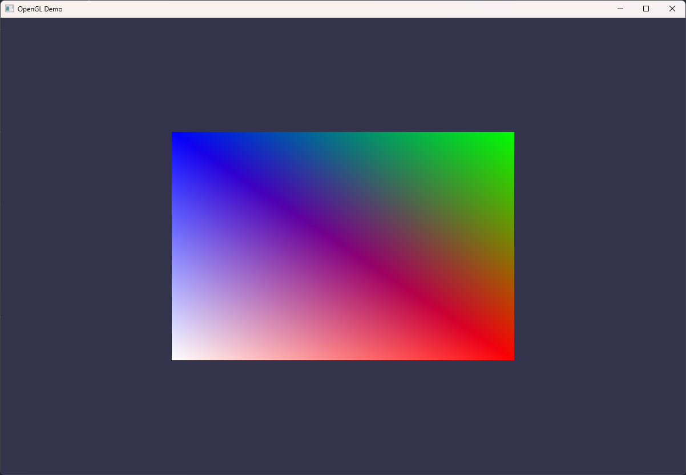
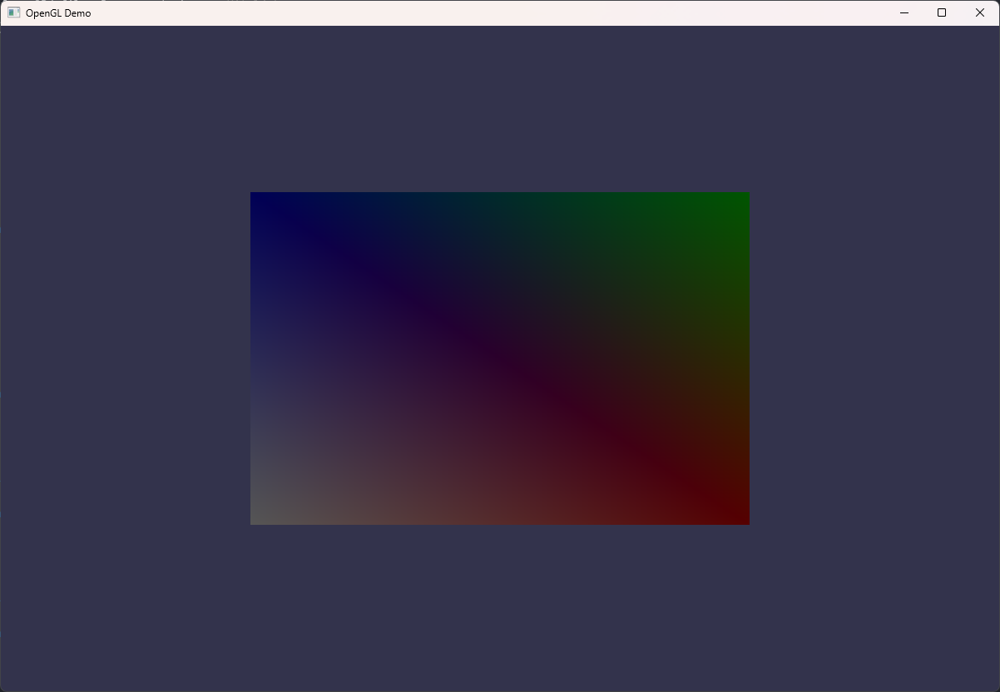
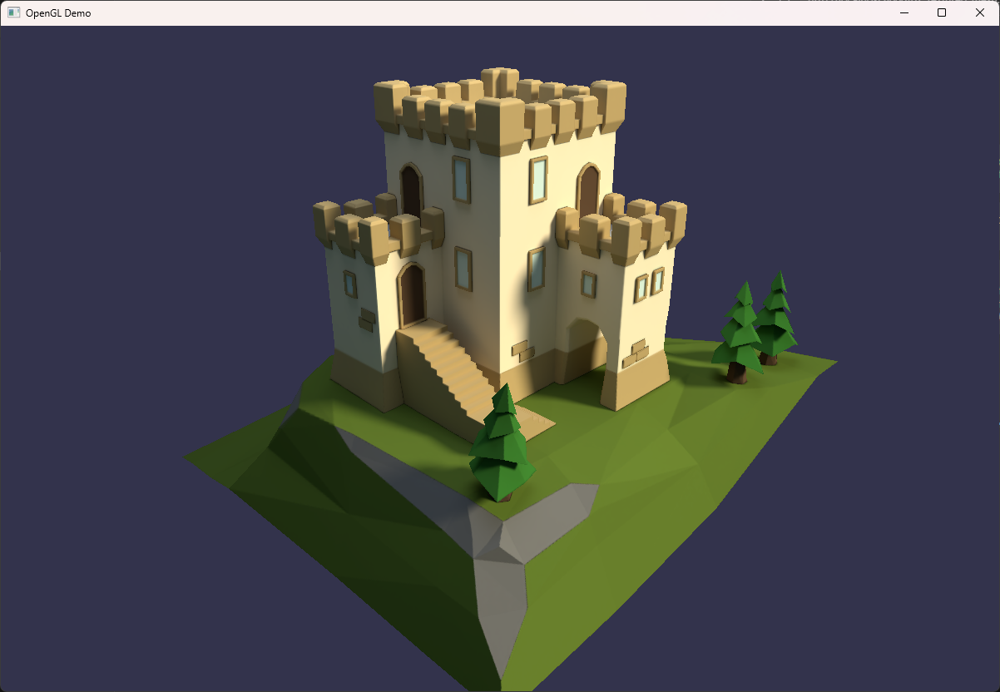
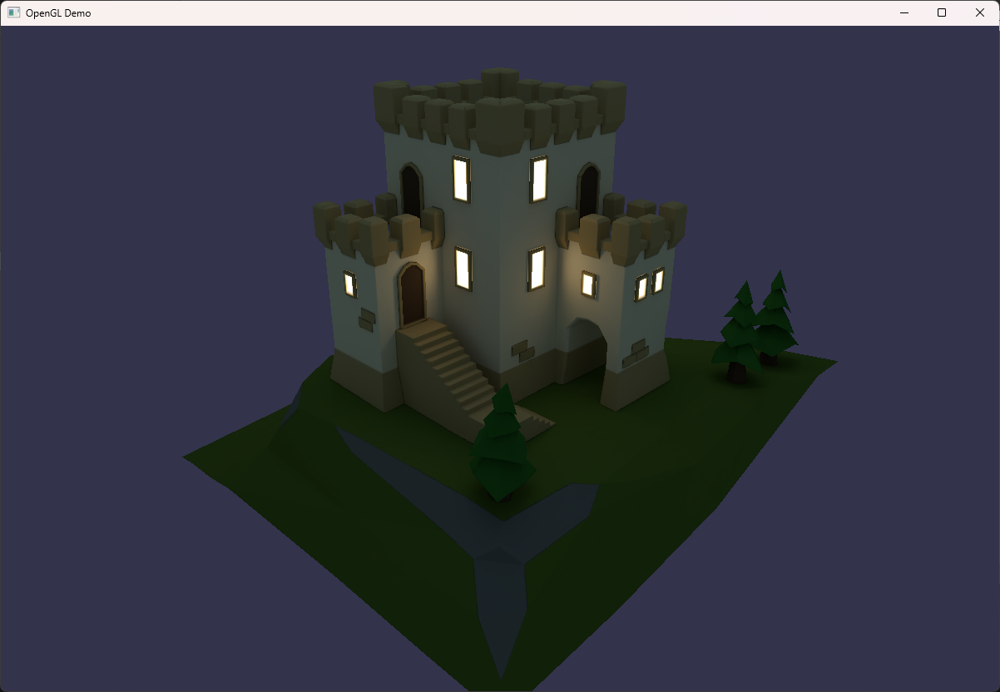

# 3D Graphics Programming ## From hello triangle to textured mesh Vitalijs Komasilovs --v-- ## Graphics pipeline  Notes: - Uploaded vertex coordinates as a byte buffer - Specified how to interpret the buffer - Vertex shader receives inputs and sends them down the pipeline - Rasterized vertices as triangle - Set color for each fragment - Blended triangle with background - Showed the framebuffer on screen --v-- ## Hello triangle  <!-- .element class="r-stretch" --> --s-- ## Drawing "complex" objects <div class='cols'><div>  </div><div> <br> ```c++ const std::vector<glm::vec3> vertices = { // 1st triangle {-0.5, -0.5, 0.0}, // A { 0.5, -0.5, 0.0}, // B {-0.5, 0.5, 0.0}, // D // 2nd triangle { 0.5, -0.5, 0.0}, // B <-- !!! { 0.5, 0.5, 0.0}, // C {-0.5, 0.5, 0.0}, // D <-- !!! }; ``` </div></div> Notes: Drawing multiple triangles has a problem: many duplicates. --v-- ## Vertices and indices <div class='cols'><div>  </div><div> <br> ```c++ const std::vector<glm::vec3> vertices = { {-0.5, -0.5, 0.0}, // A { 0.5, -0.5, 0.0}, // B { 0.5, 0.5, 0.0}, // C {-0.5, 0.5, 0.0}, // D }; const std::vector<uint32_t> indices = { 0, 1, 3, 1, 2, 3 }; ``` </div></div> Notes: The trick: define unique vertices, and then use them by index. --v-- ## Data structures ```mermaid graph BT vao[Vertex Array<br>Object] vbo[Vertex Buffer<br>Object] ebo[Element Buffer<br>Object] va0[Vertex<br>Attribute #0] va1[Vertex<br>Attribute #...] vtxBytes@{ shape: doc, label: "Vertex coordinates<br>(bytes)" } idxBytes@{ shape: doc, label: "Vertex indices<br>(bytes)" } desc0@{ shape: doc, label: "Description #0" } desc1@{ shape: doc, label: "Description #..." } vbo --> vao ebo --> vao va0 --> vao va1 --> vao vtxBytes --> vbo idxBytes --> ebo desc0 --> va0 desc1 --> va1 style ebo stroke:green; style idxBytes stroke:green; ``` Notes: Additional *element* buffer should be created and uploaded to GPU. --v-- ## Element Buffer Object (EBO) ```c++ // VAO ... // VBO ... // EBO GLuint indexBuf; glGenBuffers(1, &indexBuf); glBindBuffer(GL_ELEMENT_ARRAY_BUFFER, indexBuf); glBufferData(GL_ELEMENT_ARRAY_BUFFER, sizeof(indices[0]) * indices.size(), indices.data(), GL_STATIC_DRAW); ``` --v-- ## Indexed drawing ```diff glUseProgram(shaderProgram); glBindVertexArray(vertexArray); - glDrawArrays(GL_TRIANGLES, 0, vertices.size()); + glDrawElements(GL_TRIANGLES, indices.size(), GL_UNSIGNED_INT, (void *)0); ``` --v-- ## Hello rectangle  <!-- .element class="r-stretch" --> --s-- ## Vertex attributes  ```c++ const std::vector<glm::vec3> vertices = { {-0.5, -0.5, 0.0}, { 0.5, -0.5, 0.0}, { 0.5, 0.5, 0.0}, {-0.5, 0.5, 0.0}, }; ``` Notes: So far only single vertex attribute was used - XYZ coordinates. --v-- ## More vertex attributes  ```c++ struct VertexData { glm::vec3 pos; glm::vec3 color; }; const std::vector<VertexData> vertices = { { {-0.5, -0.5, 0.0}, {1.0, 1.0, 1.0} }, { { 0.5, -0.5, 0.0}, {1.0, 0.0, 0.0} }, { { 0.5, 0.5, 0.0}, {0.0, 1.0, 0.0} }, { {-0.5, 0.5, 0.0}, {0.0, 0.0, 1.0} }, }; ``` Notes: It is possible to upload multiple attributes. - Max number is defined by GPU hardware; - OpenGL requires at least 16. For convenience it is wise to define `struct` for vertex attributes. --v-- ## Vertex attribute descriptions ```c++ glEnableVertexAttribArray(0); glVertexAttribPointer( 0, 3, GL_FLOAT, GL_FALSE, sizeof(VertexData), (void *)offsetof(VertexData, pos) ); glEnableVertexAttribArray(1); glVertexAttribPointer( 1, 3, GL_FLOAT, GL_FALSE, sizeof(VertexData), (void *)offsetof(VertexData, color) ); ``` Notes: Stride and offset parameters are easily obtained from the struct. --v-- ## Vertex shader ```glsl #version 450 core layout(location = 0) in vec3 aPos; layout(location = 1) in vec3 aColor; layout(location = 0) out vec3 vertexColor; void main() { // very complex transformation of coordinates gl_Position = vec4(aPos.xyz, 1.0); // very complex color manipulation vertexColor = aColor; } ``` Notes: Input attribute is available at corresponding `location`. The shader can use the attribute and, optionally, pass it to the next stages. --v-- ## Fragment shader ```glsl #version 450 core layout(location = 0) in vec3 vertexColor; layout(location = 0) out vec4 fragColor; void main() { // very complex pixel color (RGBA) calculations fragColor = vec4(vertexColor, 1.0); } ``` Notes: Vertex shader output location correspond to Fragment shader input location. --v-- ## Colored rectangle  <!-- .element class="r-stretch" --> Notes: Why so many colors? We defined only few "pure" colors. --v-- ## Attribute interpolation  Rasterization stage interpolates attributes<br> (position, color, or any other value). Notes: Interpolation can be used for various tricks. Vertex shader `out` ==> Fragment shader `in` --s-- ## Uniforms - Shader attributes are specified *per element* - vertex, e.g. from input buffers - fragment, e.g. interpolated - Uniforms are specified *per shader program* - global, available in all stages --v-- ## Updating uniforms ```c++ ... glUseProgram(shaderProgram); // calculate value dynamically, i.e. make "animation" float ts = glfwGetTime(); float value = sin(ts) / 2.0f + 0.5f; // set value for uniform #0 glUniform1f(0, value); ... ``` Notes: - `1f` - 1 float value - `4uiv` - vector of 4 unsigned int values --v-- ## Fragment shader ```glsl #version 450 core layout(location = 0) in vec3 vertexColor; layout(location = 0) uniform float value; layout(location = 0) out vec4 fragColor; void main() { // very complex pixel color (RGBA) calculations fragColor = vec4(vertexColor * value, 1.0); } ``` Notes: Value is used as a "lightness" parameter for vertex colors. --v-- ## Animated colored rectangle <div class="r-stack r-stretch"> <p></p> <p></p> </div> --s-- ## Problem adding details How to add more details to the objects (e.g. colors)? - add more vertices with color attributes; - triangles on screen become smaller; - only few pixels per triangle; - similar to naive per-pixel algorithm; - slow rendering 😟 --v-- ## Textures  Notes: Texture is just a raster image wrapped around triangles. UV coordinates define which part of the image to use for each triangle. --v-- ## Texture coordinates ```c++ struct VertexData { glm::vec3 pos; glm::vec3 color; glm::vec2 uv; }; const std::vector<VertexData> vertices = { {{-0.5, -0.5, 0}, {1.0, 1.0, 1.0}, {0.0, 0.0}}, {{ 0.5, -0.5, 0}, {1.0, 0.0, 0.0}, {1.0, 0.0}}, {{ 0.5, 0.5, 0}, {0.0, 1.0, 0.0}, {1.0, 1.0}}, {{-0.5, 0.5, 0}, {0.0, 0.0, 1.0}, {0.0, 1.0}}, }; ``` Notes: Add even more attributes to the vertex buffer. --v-- ## UV attribute description ```c++ // Attributes #0 and #1 ... glEnableVertexAttribArray(2); glVertexAttribPointer( 2, 2, GL_FLOAT, GL_FALSE, sizeof(VertexData), (void *)offsetof(VertexData, uv) ); ``` Notes: Define attribute similarly to previous. `struct` trick eliminates manual offset calculations. --v-- ## Vertex shader ```glsl #version 450 core layout(location = 0) in vec3 aPos; layout(location = 1) in vec3 aColor; layout(location = 2) in vec2 aUV; layout(location = 0) out vec3 vertexColor; layout(location = 1) out vec2 uv; void main() { gl_Position = vec4(aPos.xyz, 1.0); vertexColor = aColor; uv = aUV; } ``` Notes: Similar to vertex colors, we can use UV values or pass them to the next stages. In this case UVs will be interpolated. --v-- ## Reading image files Single-header library https://github.com/nothings/stb ```c++ #include "stb_image.h" ``` ```c++ int width, height, nChannels; uint8_t *pixels = stbi_load("assets/textures/old_wood.jpg", &width, &height, &nChannels, 0); if (!pixels) { throw std::runtime_error("Failed to load texture image"); } ... stbi_image_free(pixels); ``` Notes: `pixels` are raw bytes for pixel colors. --v-- ## Creating and uploading texture ```c++ GLuint woodTexture; glGenTextures(1, &woodTexture); glBindTexture(GL_TEXTURE_2D, woodTexture); // optional parameters glTexParameteri(GL_TEXTURE_2D, GL_TEXTURE_WRAP_S, GL_REPEAT); glTexParameteri(GL_TEXTURE_2D, GL_TEXTURE_WRAP_T, GL_REPEAT); glTexParameteri(GL_TEXTURE_2D, GL_TEXTURE_MIN_FILTER, GL_LINEAR_MIPMAP_LINEAR); glTexParameteri(GL_TEXTURE_2D, GL_TEXTURE_MAG_FILTER, GL_LINEAR); // uploading glTexImage2D(GL_TEXTURE_2D, 0, GL_RGB, width, height, 0, GL_RGB, GL_UNSIGNED_BYTE, pixels); glGenerateMipmap(GL_TEXTURE_2D); ``` Notes: - `0` - level - `GL_RGB` - internal GPU format - `width`, `height` - `0` - border (legacy, must be 0) - `GL_RGB` - buffer format --v-- ## Drawing with textures ```c++ ... glUniform1i(1, 0); // location=1, unit=GL_TEXTURE0 glActiveTexture(GL_TEXTURE0); glBindTexture(GL_TEXTURE_2D, woodTexture); glUniform1i(2, 1); // location=2, unit=GL_TEXTURE1 glActiveTexture(GL_TEXTURE1); glBindTexture(GL_TEXTURE_2D, smileTexture); ... glBindVertexArray(vertexArray); glDrawElements(GL_TRIANGLES, indices.size(), GL_UNSIGNED_INT, (void *)0); ``` Notes: Uniforms specify `location` for texture "slots". Textures are bound to the "slots". --v-- ## Fragment shader ```glsl layout(location = 0) in vec3 vertexColor; layout(location = 1) in vec2 uv; layout(location = 0) uniform float value; layout(location = 1) uniform sampler2D tex1; layout(location = 2) uniform sampler2D tex2; layout(location = 0) out vec4 fragColor; void main() { vec4 clrTex1 = texture(tex1, uv); vec4 clrTex2 = texture(tex2, uv); vec4 clrVtx = vec4(vertexColor, 1.0f); fragColor = mix(clrTex1 * clrVtx, clrTex2, value); } ``` Notes: Special type of uniform - `sampler2D`. `texture(...)` function "samples" given texture at specified coordinate. Obtained "sample" can be used in arbitrary way (artistic freedom). --v-- ## Textured rectangle  <!-- .element class="r-stretch" --> --s-- ## Transformations  Note: Creating and uploading vertex buffers is "expensive" operation. Better approach is to upload it once (or rarely), and transform later as needed. Usually transformations are used for vertex coordinates, but can be applied to any parameters it it makes sense. --v-- ## Transformation order matters  Notes: Transformations can be chained for desired results. --v-- ## How to apply transformations? $ T = \text{\\{rotation, translation, scale, ...\\}} $ $ T \cdot\left(x, y, z\right) \Rightarrow \left(x', y', z'\right) $ Notes: It would be nice to have a technique to apply all transformations at once. --v-- ## Matrix and vector multiplication $ \begin{bmatrix} ? & ? & ? & ? \\\\ ? & ? & ? & ? \\\\ ? & ? & ? & ? \\\\ 0 & 0 & 0 & 1 \end{bmatrix} \cdot \begin{pmatrix} x \\\\ y \\\\ z \\\\ 1 \end{pmatrix}= \begin{pmatrix} x' \\\\ y' \\\\ z' \\\\ 1 \end{pmatrix} $ ```glsl gl_Position = vec4(x, y, z, 1.0); ``` Notes: `4x4` matrix is able to "encode" all possible transformations. Formulas for each element can be derived in geometry class. --v-- ## Transformation matrix uniform ```c++ #include <glm/gtc/matrix_transform.hpp> #include <glm/gtc/type_ptr.hpp> // fill transformation matrix glm::mat4 trans = glm::mat4(1.0f); trans = glm::translate(trans, {0.75f, 0.25f, 0.0f}); trans = glm::scale(trans, {0.25f, 0.75f, 0.0f}); trans = glm::rotate(trans, glm::radians(45.0f), {0.0f, 0.0f, 1.0f}); // upload to GPU, location=3 glUniformMatrix4fv(3, 1, GL_FALSE, glm::value_ptr(trans)); ``` Notes: The matrix can be chained via individual transformations. Uniforms are used to upload the matrix to GPU. --v-- ## Vertex shader ```glsl ... layout(location = 3) uniform mat4 transform; void main() { gl_Position = transform * vec4(aPos.xyz, 1.0); ... } ``` --v-- ## Transformed rectangle  <!-- .element class="r-stretch" --> --s-- ## Coordinate systems <div class='cols'><div>  </div><div> <br> - Define reference points - Easier operations / calculations - Applied in step-by-step manner - Goal: get Normalized Device Coordinates </div></div> Notes: Define vertices in one coordinate system, and later transform to another. --v-- ## Model (world) space  Notes: Vertices are defined in "local" space, i.e. coordinates relative to local reference point (pivot). Various objects may be placed withing the "modelled world", i.e. coordinates relative to "world" center. The same vertices can be "reused" multiple times with different "world" coordinates. --v-- ## View (camera) space  Notes: Camera defines our eye position, i.e. how we look into the "world". From our reference point, we are in the center of the space, and everything else is transformed accordingly. --v-- ## Projection (clip) space  Notes: View parameters define visible part of the "world" - frustum. The frustum is "projected" into NDC, i.e. everything outside the frustum is "clipped". Common types of projections: perspective and orthographic, but special types can be defined as well. On later stages projection space (3D) is transformed to screen space (2D). --v-- ## Transformation matrices ```c++ glm::mat4 model = glm::mat4(1.0f); model = glm::rotate(model, glm::radians(-75.0f), glm::vec3(1.0f, 0.0f, 0.0f)); glm::mat4 view = glm::mat4(1.0f); view = glm::translate(view, glm::vec3(0.0f, -0.5f, -3.0f)); glm::mat4 projection = glm::perspective( glm::radians(45.0f), (float)1200 / (float)800, 0.1f, 100.0f); glUniformMatrix4fv(3, 1, GL_FALSE, glm::value_ptr(model)); glUniformMatrix4fv(4, 1, GL_FALSE, glm::value_ptr(view)); glUniformMatrix4fv(5, 1, GL_FALSE, glm::value_ptr(projection)); ``` Notes: Matrices can be updated (and uploaded) at different rates. For example: - `model` is updated when object moves or rotates; - `view` is updated when view is changed; - `projection` may be updated for artistic reasons (e.g. zoom effect). --v-- ## Vertex shader ```glsl ... layout(location = 3) uniform mat4 model; layout(location = 4) uniform mat4 view; layout(location = 5) uniform mat4 projection; void main() { gl_Position = projection * view * model * vec4(aPos.xyz, 1.0); ... } ``` Notes: Matrices are multiplied in reverse order, thus the coordinates systems are changed from local (vertex), to model, to view, and finally to projection space. --v-- ## Rotated rectangle in perspective  <!-- .element class="r-stretch" --> --s-- ## Drawing multiple objects ```c++ std::array positions = {glm::vec3(-2.0f, 2.0f, -5.0f), ...}; ... glm::mat4 view = ... glm::mat4 projection = ... ... glBindVertexArray(vertexArray); for (size_t i = 0; i < positions.size(); i++) { glm::mat4 model = glm::mat4(1.0f); model = glm::translate(model, positions[i]); glUniformMatrix4fv(Uniforms::model, 1, GL_FALSE, glm::value_ptr(model)); glDrawElements(GL_TRIANGLES, indices.size(), GL_UNSIGNED_INT, (void *)0); } ``` Note: The same vertex array is drawn multiple times with different model coordinates. --v-- ## Multiple rectangles in perspective  <!-- .element class="r-stretch" --> --s-- ## Preparing objects using DCCs  <!-- .element class="r-stretch" --> Notes: Objects are easier to define within dedicated DCC software, and export for use in rendering engine. --v-- ## OBJ file format <div class='cols'><div> ``` # Blender 5.0.1 # www.blender.org o Keep v -3.250000 5.000000 3.250000 v -3.250000 5.000000 -3.250000 v 3.250000 5.000000 -3.250000 ... vt 0.606747 0.881346 vt 0.608294 0.199824 vt 0.533257 0.199893 ... f 12/1 11/2 5/3 f 17/5 16/6 32/7 f 43/9 34/10 4/11 ``` </div><div> <br> - Easy to parse (text format) - Widely supported - Vertex coordinates - Colors (normals) - UV coordinates - ... </div></div> --v-- ## The Open Asset Import Library (ASSIMP) ```cmake # ./ext/CMakeLists.txt FetchContent_Declare( assimp GIT_REPOSITORY https://github.com/assimp/assimp.git GIT_TAG v6.0.2 GIT_SHALLOW TRUE ) set(ASSIMP_BUILD_ALL_IMPORTERS_BY_DEFAULT OFF) set(ASSIMP_BUILD_ALL_EXPORTERS_BY_DEFAULT OFF) set(ASSIMP_BUILD_OBJ_IMPORTER ON) set(ASSIMP_BUILD_TESTS OFF) FetchContent_MakeAvailable(assimp) ``` Notes: ASSIMP library supports dozens of file formats. We need only OBJ importing, thus disable everything else. --v-- ## Importing mesh ```c++ #include <assimp/Importer.hpp> #include <assimp/postprocess.h> #include <assimp/scene.h> Assimp::Importer importer; auto scene = importer.ReadFile("assets/meshes/keep.obj", aiProcess_Triangulate); // for now assume single mesh scene auto mesh = scene->mMeshes[0]; // use imported data ... importer.FreeScene(); ``` Notes: Triangulation is applied at post-processing stage, just in case if imported mesh contains complex polygons. --v-- ## Reading vertices ```c++ std::vector<VertexData> vertices; for (size_t i = 0; i < mesh->mNumVertices; i++) { auto vtx = mesh->mVertices[i]; auto uvs = mesh->mTextureCoords[0][i]; // assume single UV set VertexData data; data.pos = {vtx.x, vtx.y, vtx.z}; data.uv = {uvs.x, uvs.y}; vertices.push_back(data); } ``` --v-- ## Reading indices ```c++ std::vector<uint32_t> indices; for (size_t i = 0; i < mesh->mNumFaces; i++) { auto face = mesh->mFaces[i]; for (size_t j = 0; j < face.mNumIndices; j++) { indices.push_back(face.mIndices[j]); } } ``` --v-- ## Few tricks using already known techniques ```c++ Texture dayTexture("assets/textures/keep_baked_day.png"); Texture nightTexture("assets/textures/keep_baked_night.png"); ``` ```c++ float dayNight = sin(glfwGetTime() / 2.0f) * 5.0f + 0.5f; glUniform1f(3, dayNight); ``` ```glsl // fragment shader fragColor = mix(clrTex1, clrTex2, dayNight); ``` ```c++ glm::mat4 view = glm::lookAt(...); glUniformMatrix4fv(5, 1, GL_FALSE, glm::value_ptr(view)); ``` Notes: - Specially designed textures with baked lightning. - Dynamic value used as day-night factor. - GLM utilities for easier transformation matrix definitions. --v-- ## Textured mesh with day-night cycle 😎 <div class="r-stack r-stretch"> <p></p> <p></p> </div> Notes: Materials, lightning and shadows are baked into texture. Thus single mesh per whole scene. Next steps: - dynamic camera with input controls - dynamic lightning - materials and PBR - shadows